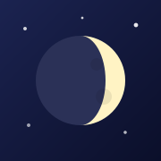
Ay Evresi
Bugün Ay hangi evrede, yüzde kaçı aydınlık? Şehrine göre doğuş-batış saatleri, sıradaki dolunay ve yeni ay, aylık Ay takvimi ve yaklaşan tutulmalar.
yeni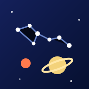
Bu Gece Gökyüzü
Bu gece hangi gezegenler görünür, nereye bakmalısın? Gezegenler, Ay ve parlak yıldızlarla şehrine göre canlı gökyüzü haritası.
yeni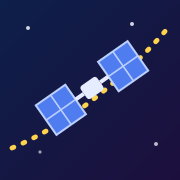
ISS Geçişleri
Uluslararası Uzay İstasyonu şehrinin üstünden ne zaman geçecek? Çıplak gözle görülen geçişlerin saati, yönü ve yüksekliği; geri sayım ve takvime ekleme.
yeni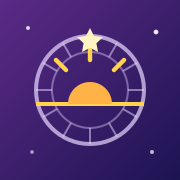
Yükselen Burç
Doğum tarihi, saati ve yerine göre yükselen burç, Ay burcu ve Güneş burcu; saatini bilmiyorsan gün boyu hangi burcun yükseldiğini gör. Eğlence amaçlı.
yeniGökyüzü Olayları Takvimi
Meteor yağmurları ve Ay ışığı durumu, Ay ile gezegenlerin yan yana geldiği geceler, süper aylar, tutulmalar, ekinoks ve gündönümleri; takvime ekle.
yeni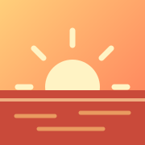
Gün Işığı
Gün doğumu ve batımı, gün uzunluğu, fotoğraf için altın saat ve mavi saat, alacakaranlık ve yıl boyu gün uzunluğu grafiği.
yeni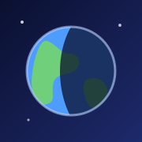
Gece-Gündüz Haritası
Dünya’nın şu an hangi yarısı aydınlık? Alacakaranlık kuşaklarıyla canlı harita ve dünya saatleri.
yeni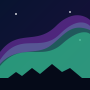
Güneş Fırtınası ve Kutup Işığı
NOAA verisiyle canlı Kp indeksi, 3 günlük tahmin, güneş rüzgârı ve Türkiye’den kutup ışığı görülme olasılığı.
yeni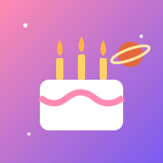
Doğduğun Gün Uzay
Doğduğun günün NASA fotoğrafı, o geceki Ay, Güneş çevresinde aldığın yol, Mars’taki yaşın ve Jüpiter’deki kilon.
yeni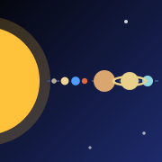
Güneş Sistemi Ölçek Modeli
Ay bir piksel olsaydı: gerçek ölçekte gezegenler ve aradaki dev boşluk; ışık hızıyla yolculuk.
yeni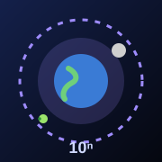
Evrenin Ölçeği
Atomdan virüse, insandan Dünya’ya, Güneş’ten Samanyolu’na: her şeyin büyüklüğünü tek sürgüyle karşılaştır.
yeni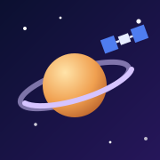
Uzay
NASA’nın günün astronomi fotoğrafı ve Uluslararası Uzay İstasyonu’nun canlı konumu.
Son Depremler
Türkiye ve dünyada son depremler: harita, büyüklük, derinlik, sana uzaklık; 5 dakikada bir yenilenir.
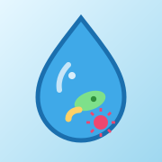
Mikro Dünya Laboratuvarı
Bir damla suya alg, bakteri, terliksi hayvan, Didinium ve virüs koy; ışığı, besini ve sıcaklığı ayarla. Gause'un av–avcı deneyini kendin tekrarla.
yeni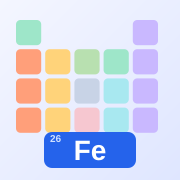
Periyodik Tablo
118 elementin Türkçe adları, sembolleri ve kütleleri; gruplar, oda sıcaklığındaki haller, ilk 20 elementin katman dağılımı ve element quizi.
yeni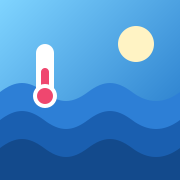
Deniz Suyu Sıcaklığı
Türkiye kıyılarında güncel deniz suyu sıcaklığı ve dalga yüksekliği, haritada; 7 günlük tahmin.
yeni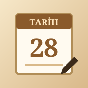
Tarihte Bugün
Bugün tarihte neler oldu, kimler doğdu? Vikipedi’den her gün değişen olaylar; istediğin günü seç.
yeni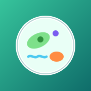
Mikro Dünya Ansiklopedisi
Amip, terliksi hayvan, öglena, su ayısı, diatom, bakteriler, virüsler: 50 mikroskobik canlının boyutu, yaşamı ve ilginç bilgileri. Türkçe ve İngilizce.
yeniÖğretmen Paketi
MEB fen bilimleri öğrenme çıktılarına bağlı 5 ders planı, öğrenci sonuçlarını canlı gösteren sınıf quiz paneli ve yazdırılabilir mikroskop gözlem formu.
yeniMikroskop nasıl kullanılır?
Okul mikroskobuyla preparat hazırlama, odaklama ve büyütme hesabı: adım adım rehber ve sık yapılan hatalar.
Evde saman infüzyonu
Bir kavanoz su ve bir tutam samanla bir haftada terliksi hayvan ve öglena yetiştir: malzemeler, adımlar ve gün gün neler göreceğin.
Aramana uyan sonuç yok. Tüm araçlarda ara
Meraklılar Köşesi hakkında
Meraklılar Köşesi, “şu an gökyüzünde ne var?” sorusunu soranlar için hazırlandı. Ay evresi, gezegenlerin konumu ve uzay istasyonunun geçişleri seçtiğin şehre göre, gök mekaniği formülleriyle doğrudan tarayıcında hesaplanır; bir uygulama yüklemen ya da üye olman gerekmez. Yükselen burç sayfası aynı hassas gökyüzü hesaplarını kullanır ama astrolojinin kendisi bilimsel değildir; o sayfa eğlence içindir.
Son depremler, NASA’nın günün astronomi fotoğrafı ve mikroskobik canlıları anlatan Mikro Dünya da burada. Öğretmenler için ders planları ve evde yapılabilecek basit deneyler Mikro Dünya bölümünde.
About curious corner
The Curious Corner is for anyone who asks “what’s in the sky right now?”. Moon phases, planet positions and space station passes are calculated for your chosen city with celestial mechanics, right in your browser; nothing to install, no sign-up. The rising sign page uses the same precise sky positions, but astrology itself is not a science; that page is for fun.
Recent earthquakes, NASA’s astronomy picture of the day and Micro World, about microscopic life, are here too. Lesson plans for teachers and simple experiments to try at home are in the Micro World section.